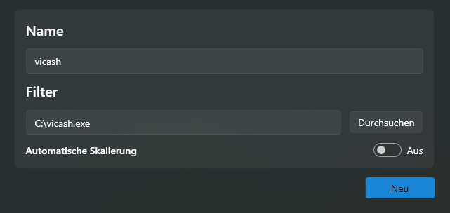
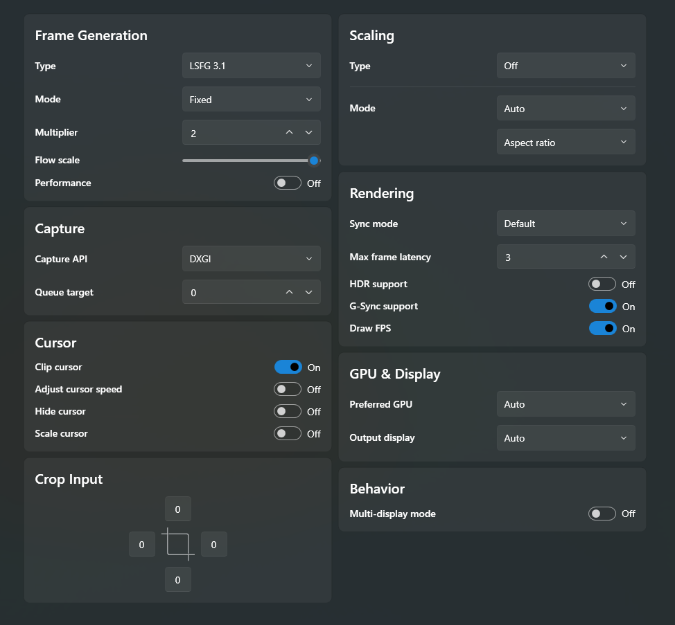

Console
PS5 or Xbox Series X|S
Console frame generation guide
Make 30 FPS console games look smoother at 60 FPS or more with a capture card, a Windows PC, vicash and Lossless Scaling.
Anleitung zur Frame Generation für Konsolen
Lass 30-FPS-Konsolenspiele mit einer Capture Card, einem Windows-PC, vicash und Lossless Scaling bei 60 FPS oder mehr flüssiger aussehen.
Demo
Assassin’s Creed Mirage on PS5: original 30 FPS beside a 60 FPS output created by Lossless Scaling.
Demo
Assassin’s Creed Mirage auf der PS5: originale 30 FPS neben einer 60-FPS-Ausgabe durch Lossless Scaling.
Start here
Four pieces of hardware and two Windows apps create the complete signal path.
PS5 or Xbox Series X|S
HDMI model with matching HDMI and USB cables
Recommended: NVIDIA RTX 30 series, AMD RX 6000 series or Intel Arc
Connected to the PC, with at least 60 Hz
APP 01
Displays the console picture on your PC.
APP 02
Generates additional frames for smoother movement.
Hier geht’s los
Vier Geräte und zwei Windows-Apps bilden den vollständigen Signalweg.
PS5 oder Xbox Series X|S
HDMI-Modell mit passenden HDMI- und USB-Kabeln
Empfohlen: NVIDIA RTX 30-Serie, AMD RX 6000-Serie oder Intel Arc
Am PC angeschlossen, mit mindestens 60 Hz
APP 01
Zeigt das Konsolenbild auf deinem PC.
APP 02
Erzeugt zusätzliche Bilder für flüssigere Bewegungen.
Compare the hardware
Pick the UGREEN model that matches the resolution and refresh rate you want to capture on the PC.
| Model | Capture on PC | PC connection | HDMI passthrough | Guide price* | Shop |
|---|---|---|---|---|---|
| 15389 | 1080p / 60 FPS 2K / 30 FPS | USB-A / USB-C USB 3.0 | — | ≈ €16 | Amazon.de ↗ |
| 25773 | 1080p / 60 FPS 2K / 30 FPS | USB-A / USB-C USB 3.0 | 4K / 30 Hz | ≈ €22 | Amazon.de ↗ |
| 25173 | 4K / 60 FPS 2K / 144 FPS 1080p / 240 FPS | USB-A / USB-C USB 3.0 | 4K / 60 Hz | ≈ €72 | Amazon.de ↗ |
*Prices are estimates from the original shortlist, not live offers. Capture modes are manufacturer ratings. Check Amazon.de for current prices.
Hardware vergleichen
Wähle das UGREEN-Modell passend zu der Auflösung und Bildrate, die du am PC aufnehmen möchtest.
| Modell | Aufnahme am PC | PC-Anschluss | HDMI-Durchschleifausgang | Richtpreis* | Shop |
|---|---|---|---|---|---|
| 15389 | 1080p / 60 FPS 2K / 30 FPS | USB-A / USB-C USB 3.0 | — | ca. 16 € | Amazon.de ↗ |
| 25773 | 1080p / 60 FPS 2K / 30 FPS | USB-A / USB-C USB 3.0 | 4K / 30 Hz | ca. 22 € | Amazon.de ↗ |
| 25173 | 4K / 60 FPS 2K / 144 FPS 1080p / 240 FPS | USB-A / USB-C USB 3.0 | 4K / 60 Hz | ca. 72 € | Amazon.de ↗ |
*Die Preise dienen als Orientierung aus der ursprünglichen Produktauswahl und sind keine Tagesangebote. Die Aufnahmemodi sind Herstellerangaben. Aktuelle Preise findest du auf Amazon.de.
Set the input
Press F1 to open the settings, then apply these values from top to bottom.
01 / Display
Immediate
02 / Capture
UGREEN Capture Card
1920 × 1080 or 2560 × 1440
30
03 / Audio
UGREEN Capture Card
PC speakers or headphones
100 ms (default)
Useful hotkeys
F1 SettingsF11 FullscreenEsc Exit fullscreenEingang festlegen
Drücke F1, um die Einstellungen zu öffnen, und übernimm dann diese Werte von oben nach unten.
01 / Anzeige
Immediate
02 / Capture
UGREEN Capture Card
1920 × 1080 oder 2560 × 1440
30
03 / Audio
UGREEN Capture Card
Lautsprecher oder Kopfhörer am PC
100 ms (Standard)
Nützliche Hotkeys
F1 EinstellungenF11 VollbildEsc Vollbild beendenGenerate the extra frames
Create a profile for vicash, then set frame generation to double the 30 FPS input.
Step 1
Create a new profile called vicash, select vicash.exe as the application and leave automatic scaling turned off.

Step 2
*Enable G-Sync support only if your monitor supports G-Sync or FreeSync.

Zusätzliche Bilder erzeugen
Erstelle ein Profil für vicash und stelle die Frame Generation so ein, dass sie die 30-FPS-Eingabe verdoppelt.
Schritt 1
Erstelle ein neues Profil mit dem Namen vicash, wähle vicash.exe als Anwendung aus und lass die automatische Skalierung ausgeschaltet.
Schritt 2
*Aktiviere G-Sync support nur, wenn dein Monitor G-Sync oder FreeSync unterstützt.